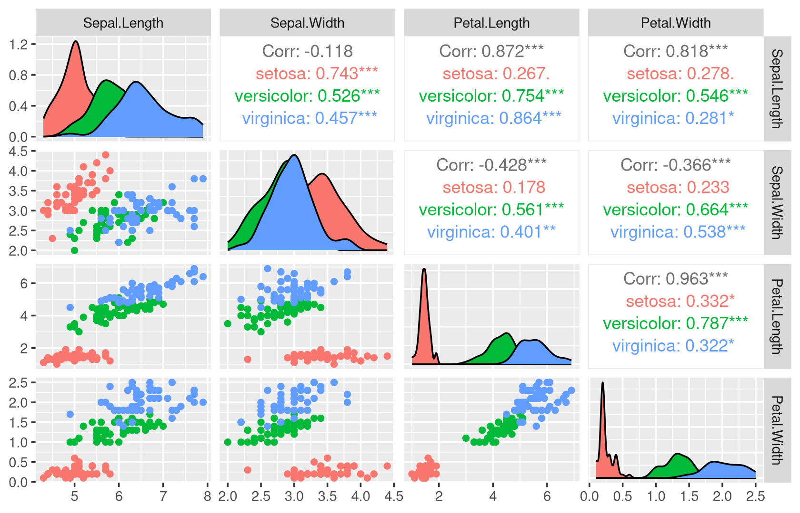
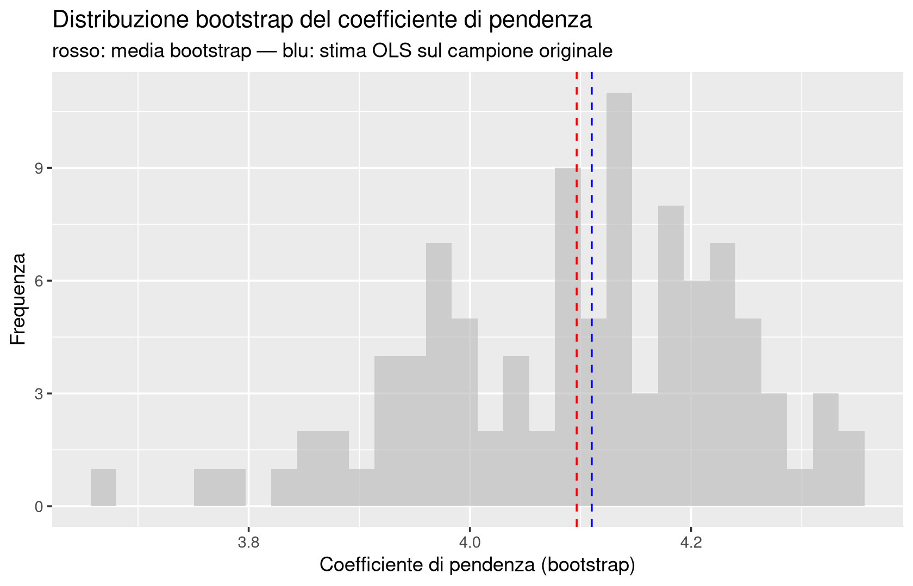
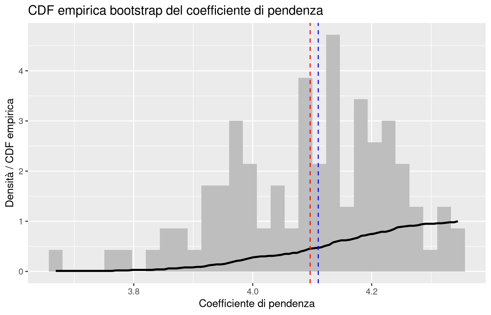
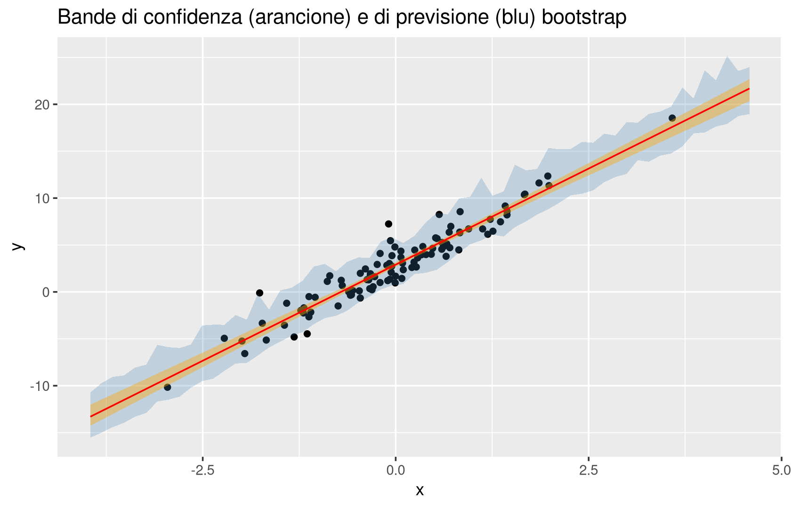
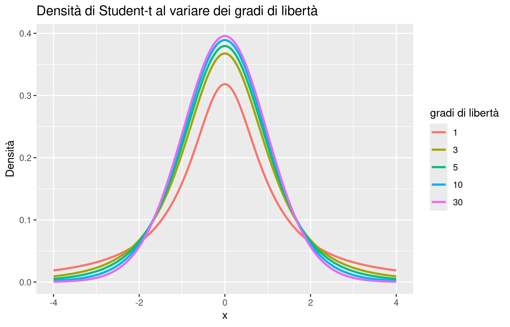
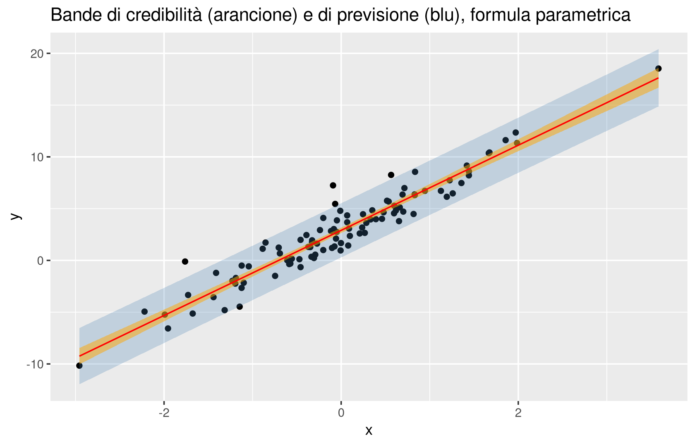

library(GGally)
ggpairs(iris, columns = 1:4, aes(color = Species))
Al termine del capitolo dovresti essere in grado di:
lm(), sapendo ricostruire concettualmente da dove provengono.Nel capitolo 6 abbiamo introdotto gli indicatori di performance per la regressione (MSE, RMSE, MAE, \(R^2\)), il confronto tra k-NN (non parametrico) e i modelli parametrici \(h(x;\theta)\), e il metodo dei minimi quadrati, ricavando per la regressione semplice \(h(x;\theta)=\theta_0+\theta_1 x\) la formula chiusa \(\theta_{OLS,1}=\operatorname{cor}(x,y)\,\sigma_y/\sigma_x\), \(\theta_{OLS,0}=\bar y-\theta_{OLS,1}\bar x\). Un’unica variabile di ingresso, però, è un caso molto particolare: quasi sempre un fenomeno dipende da più fattori simultaneamente (nel dataset iris, la lunghezza del sepalo dipende potenzialmente dalla sua larghezza e dalle dimensioni del petalo). Dobbiamo quindi generalizzare il modello lineare a un numero arbitrario \(p\) di parametri, e trovare per esso una formula chiusa altrettanto esplicita.
Da qui in avanti cambiamo anche notazione: i parametri di un modello di regressione non si chiamano più \(\theta\) ma \(\beta\), seguendo la convenzione standard della letteratura sulla regressione lineare. Non è un capriccio notazionale: da questo momento riserviamo la lettera \(\theta\) per indicare l’insieme completo dei parametri del modello probabilistico, cioè sia i coefficienti \(\beta\) sia la deviazione standard \(\sigma\) del rumore residuo, mentre \(\beta\) denota specificamente il vettore dei coefficienti della parte lineare. Questa distinzione tornerà utile più avanti nel capitolo, quando dovremo stimare l’incertezza non solo su \(\beta\) ma anche su \(\sigma\).
Un modello lineare generale è un modello parametrico della forma \[ h(x;\beta) = \phi_1(x)\beta_1 + \phi_2(x)\beta_2 + \cdots + \phi_p(x)\beta_p, \] dove \(\phi_1,\ldots,\phi_p\) sono funzioni fissate (dette basi o feature trasformate) e \(\beta=(\beta_1,\ldots,\beta_p)\) è il vettore dei coefficienti da stimare. In notazione compatta, definendo \[ \Phi(x) := (\phi_1(x),\ldots,\phi_p(x)) \in \mathbb{R}^p \quad \text{(vettore \emph{riga})}, \qquad \beta \in \mathbb{R}^p \quad \text{(vettore \emph{colonna})}, \] il modello si scrive semplicemente \(h(x;\beta) = \Phi(x)\beta\), e il residuo è \(\varepsilon := y - h(x;\beta)\).
Il modello è “lineare” nei parametri \(\beta\), non necessariamente nelle variabili originarie \(x\): le \(\phi_j\) possono essere funzioni arbitrariamente non lineari. Alcuni casi particolari, già incontrati o solo accennati nel capitolo 6:
Perché insistere sulla distinzione tra vettore riga e vettore colonna, quando in fondo \(\Phi(x)\beta\) è solo un numero? La ragione è puramente pratica, ma importante: è esattamente la stessa convenzione già adottata per la PCA nel capitolo 3, dove ogni osservazione era pensata come una riga di un data frame \(n\times d\). Pensare \(\Phi(x)\) come riga rende automaticamente coerenti le dimensioni quando, tra un attimo, impileremo \(n\) osservazioni in una matrice: ogni riga della matrice sarà un’osservazione, esattamente come in un data frame R. Se invece si confondono righe e colonne, le formule matriciali che seguono (in particolare la matrice di Gram) smettono di avere senso dimensionale, ed è la fonte di errore più comune quando si manipolano questi conti a mano.
Con \(\geq 3\) regressori il grafico del modello non è più visualizzabile direttamente: con un solo regressore \(h\) è una retta nel piano, con due regressori è un piano (o una superficie, nel caso polinomiale) nello spazio tridimensionale, ma con tre o più regressori non esiste più una rappresentazione grafica diretta della funzione \(h\). Quando in seguito nell’esempio sul dataset iris scriveremo un modello con tre regressori, dovremo quindi rinunciare a “vedere” il piano di regressione, e affidarci del tutto all’interpretazione algebrica dei coefficienti.
Se disponiamo di un intero training set \(\{(x_i,y_i)\}_{i=1,\ldots,n}\), possiamo impilare le \(n\) osservazioni in notazione matriciale, esattamente come si fa con un data frame R, in cui ogni riga è un’osservazione: \[ \bm y := \begin{bmatrix} y_1\\ \vdots \\ y_n \end{bmatrix} \in \mathbb{R}^n, \qquad \Phi(\bm x) := \begin{bmatrix} \phi_1(x_1) & \cdots & \phi_p(x_1)\\ \vdots & & \vdots\\ \phi_1(x_n) & \cdots & \phi_p(x_n) \end{bmatrix} \in \mathbb{R}^{n\times p}. \] Il vettore dei residui sul training set è \(\bm\varepsilon := \bm y - \Phi(\bm x)\beta\).
Il metodo dei minimi quadrati (OLS) per il modello lineare generale cerca \[ \beta_{OLS} \in \arg\min_{\beta\in\mathbb{R}^p} \sum_{i=1}^n \big(y_i - \Phi(x_i)\beta\big)^2. \] Definendo la matrice di Gram \(G := \Phi(\bm x)^T\Phi(\bm x) \in \mathbb{R}^{p\times p}\), la soluzione ha la forma esplicita \[ \beta_{OLS} = G^{-1}\,\Phi(\bm x)^T \bm y. \]
Da qui in avanti, per alleggerire la notazione (ed essere coerenti con il codice R che useremo tra poco, dove la matrice \(\Phi(\bm x)\) diventa semplicemente X), scriviamo \(X := \Phi(\bm x)\) e \(G=X^TX\).
\(G\) è invertibile se e solo se le colonne di \(X\) sono linearmente indipendenti, il che richiede in particolare \(p \le n\): non si possono stimare più parametri di quante osservazioni si abbiano. Ma anche con \(p\le n\), \(G\) può essere singolare (o quasi singolare) se due o più regressori sono fortemente correlati tra loro — il problema della collinearità, che tratteremo in dettaglio nel capitolo 8 insieme ai metodi di regolarizzazione pensati apposta per questa situazione. Per ora basti sapere che la formula \(\beta_{OLS}=G^{-1}X^T\bm y\) presuppone implicitamente che \(G\) sia invertibile.
Vale la pena ricostruire da dove viene la formula, perché il metodo di dimostrazione (completare un quadrato in forma matriciale) è uno strumento che ricomparirà. Il metodo dei minimi quadrati, risalente almeno a Gauss (già incontrato nel capitolo 6 a proposito della contrapposizione con la scelta di Laplace), ammette qui una derivazione del tutto elementare.
Sviluppiamo la somma dei quadrati dei residui in notazione matriciale: \[ \sum_{i=1}^n (y_i - x_i\beta)^2 = \|\bm y - X\beta\|^2 = (\bm y-X\beta)^T(\bm y-X\beta) = \|\bm y\|^2 + \beta^TX^TX\beta - \beta^TX^T\bm y - \bm y^TX\beta. \]
In questo genere di conto a mano, l’errore più comune è “perdere” un fattore \(\beta\) da qualche parte nel prodotto \(X\beta\) o \(\beta^TX^T\) — un errore che capita anche a chi il conto lo fa da anni, e che conviene sempre controllare confrontando le dimensioni: ogni termine della somma deve essere uno scalare.
Ora completiamo il quadrato, aggiungendo e sottraendo il termine \(\bm y^TXG^{-1}X^T\bm y\) (una costante rispetto a \(\beta\)): \[ \sum_{i=1}^n (y_i-x_i\beta)^2 = \|\bm y\|^2 - \bm y^TXG^{-1}X^T\bm y + (\beta - G^{-1}X^T\bm y)^T G (\beta - G^{-1}X^T\bm y). \] Si può verificare quest’identità semplicemente riespandendo il quadrato a destra e osservando che i termini si ricombinano in quelli di partenza. Il punto cruciale è che, nella riscrittura, solo l’ultimo termine dipende da \(\beta\), ed è una forma quadratica \(v^TGv\) con \(v=\beta-G^{-1}X^T\bm y\). Poiché \(G\) è (per ipotesi) invertibile e simmetrica semidefinita positiva, questa forma quadratica è sempre \(\ge 0\), ed è nulla se e solo se \(v=0\). Minimizzare l’intera espressione rispetto a \(\beta\) equivale dunque ad annullare quest’ultimo termine, da cui \[ \beta_{OLS} = G^{-1}X^T\bm y. \]
Questa dimostrazione non è solo un esercizio algebrico: mostra che \(\beta_{OLS}\) è l’unico punto di minimo (quando \(G\) è invertibile), e che l’errore quadratico per un \(\beta\) qualunque si decompone sempre in “il minimo possibile” più “una penalità quadratica per essersi allontanati da \(\beta_{OLS}\)”. Questa stessa idea di completamento del quadrato come tecnica di ottimizzazione in forma chiusa è uno schema che si ripresenterà, in forma più elaborata, quando discuteremo la stima bayesiana più avanti in questo capitolo, e la regolarizzazione di Ridge nel capitolo 8.
Sostituendo \(\beta_{OLS}\) nella scomposizione appena trovata e dividendo per \(n\), si ottiene un’identità che vale per ogni \(\beta\): \[ MSE(h(\cdot;\beta)) = MSE(h(\cdot;\beta_{OLS})) + (\beta-\beta_{OLS})^T \frac{G}{n} (\beta-\beta_{OLS}). \] In particolare, per \(\beta=\beta_{OLS}\) il secondo termine si annulla e \[ MSE(h(\cdot;\beta_{OLS})) = \frac{1}{n}\Big(\|\bm y\|^2 - \bm y^TXG^{-1}X^T\bm y\Big) = \frac{1}{n}\big\|(\mathrm{Id}-\Pi_X)\bm y\big\|^2, \] dove \(\Pi_X := XG^{-1}X^T\).
\(\Pi_X\) è la matrice di proiezione ortogonale sullo spazio generato dalle colonne di \(X\) (nota talvolta anche come hat matrix, perché \(\Pi_X\bm y = X\beta_{OLS} = \hat{\bm y}\) trasforma le osservazioni nelle previsioni sul training set). La quantità \((\mathrm{Id}-\Pi_X)\bm y\) è dunque la componente di \(\bm y\) ortogonale a tutto ciò che il modello può rappresentare — cioè esattamente il vettore dei residui ottimali \(\bm y - X\beta_{OLS}\).
\(MSE(h(\cdot;\beta_{OLS}))\) è proporzionale alla norma al quadrato della proiezione di \(\bm y\) sul complemento ortogonale dello spazio generato dalle colonne di \(X\): geometricamente, i minimi quadrati “spiegano” tutta la parte di \(\bm y\) che vive nello spazio dei possibili modelli lineari, e ciò che resta (il residuo) è, per costruzione, ortogonale a quello spazio. Questa immagine geometrica — proiezioni, spazi generati da colonne, complementi ortogonali — è la stessa già incontrata nella PCA (capitolo 3), dove proiettavamo i dati su un sottospazio a bassa dimensione per massimizzare la varianza spiegata: qui proiettiamo \(\bm y\) su un sottospazio scelto a priori (quello generato dai regressori) per minimizzare l’errore residuo.
Usiamo il dataset iris per predire Sepal.Length in funzione di Sepal.Width, Petal.Length e Petal.Width (\(p=4\), includendo l’intercetta). Prima di stimare il modello, un’occhiata esplorativa alle relazioni tra le variabili (già incontrata nel capitolo 3 a proposito della matrice di correlazione) aiuta a farsi un’idea preventiva dei segni attesi dei coefficienti:
library(GGally)
ggpairs(iris, columns = 1:4, aes(color = Species))
Dalla matrice di grafici si osserva che Sepal.Length è associata positivamente sia a Petal.Length sia a Petal.Width, mentre la relazione con Sepal.Width appare più debole se non addirittura negativa se si ignora la specie. Prima di calcolare: ti aspetti che il coefficiente di Sepal.Width nel modello multiplo abbia lo stesso segno che sembra suggerire lo scatterplot bivariato?
Stimiamo ora il modello con lm() e, separatamente, con la formula matriciale esplicita \(\beta_{OLS}=G^{-1}X^T\bm y\), per verificare che coincidano:
iris_model <- lm(Sepal.Length ~ Sepal.Width + Petal.Length + Petal.Width, data = iris)
coef(iris_model) (Intercept) Sepal.Width Petal.Length Petal.Width
1.8559975 0.6508372 0.7091320 -0.5564827 X <- as.matrix(cbind(1, iris[, 2:4]))
y <- as.matrix(iris$Sepal.Length)
beta_ols <- solve(t(X) %*% X) %*% t(X) %*% y
beta_ols [,1]
1 1.8559975
Sepal.Width 0.6508372
Petal.Length 0.7091320
Petal.Width -0.5564827Dopo il calcolo: i due metodi restituiscono, a meno di arrotondamenti, esattamente gli stessi coefficienti — non stiamo “reimplementando” lm(), ma verificando che la formula chiusa dimostrata sopra sia davvero ciò che lm() calcola internamente (con un algoritmo numerico più stabile, basato sulla fattorizzazione QR piuttosto che sull’inversione diretta di \(G\), ma matematicamente equivalente).
Il coefficiente di Sepal.Width nel modello multiplo risulta positivo (circa \(0.65\)), mentre lo scatterplot bivariato con Sepal.Length suggeriva una relazione debole o leggermente negativa. Non è una contraddizione, ma un fenomeno tipico della regressione multipla: il coefficiente \(\beta_j\) misura l’effetto di \(x_j\) tenendo fissi tutti gli altri regressori. Una volta “controllato” per le dimensioni del petalo (fortemente correlate con la specie), l’effetto residuo della larghezza del sepalo emerge con segno positivo. Questa è l’interpretazione corretta di ogni coefficiente di regressione multipla: la variazione attesa di \(y\) per un’unità di variazione di \(x_j\), a parità di tutti gli altri regressori.
“A parità di tutti gli altri regressori” è un’affermazione puramente statistica, non causale: non stiamo dicendo che intervenendo fisicamente sulla larghezza del sepalo (tenendo petalo e specie inalterati) la lunghezza del sepalo aumenterebbe. Stiamo descrivendo un’associazione condizionata all’interno dei dati osservati. La distinzione tra correlazione/associazione e causalità, già incontrata a proposito della correlazione di Pearson nel capitolo 3, vale a maggior ragione per i coefficienti di una regressione multipla, che sono facilmente sovra-interpretati come “effetti causali”.
Con tre regressori, inoltre, non esiste più un grafico diretto del piano di regressione (come osservato sopra): l’unico modo per “vedere” il modello è attraverso i coefficienti stimati e, più avanti, gli intervalli di incertezza attorno ad essi.
Species come regressore categoriale al modello, in che modo cambierebbe la matrice \(\Phi(\bm x)\)? (Non serve calcolare nulla: ragiona su come si codifica una variabile categoriale in un modello lineare.)Fin qui abbiamo prodotto una stima puntuale \(\beta_{OLS}\): un singolo numero (vettoriale) che riassume “il miglior modello lineare compatibile con i dati osservati”. Ma se raccogliessimo un training set diverso — anche generato dallo stesso fenomeno — otterremmo quasi certamente un \(\beta_{OLS}\) leggermente diverso. Quanto? È proprio questa la domanda a cui una stima puntuale, da sola, non può rispondere.
Vale la pena essere espliciti su un punto metodologico che distingue questo corso da un tipico corso introduttivo di machine learning: se il nostro obiettivo fosse solo la previsione, potremmo accontentarci di \(\beta_{OLS}\) e della sua accuratezza su un test set, come abbiamo fatto nei capitoli precedenti. Ma se il corso si chiama Statistica, il compito non finisce con una stima puntuale: dobbiamo quantificare la nostra incertezza su quella stima. Il machine learning “puro”, con moltissimi dati e modelli molto complessi, spesso si accontenta di ottime stime puntuali senza preoccuparsi troppo di quantificarne l’incertezza; la statistica, storicamente, ha sviluppato proprio gli strumenti per rispondere a “quanto ci possiamo fidare di questo numero?”. Non sono due mondi separati: sono due estremi di uno stesso spettro, e molte delle idee che seguono (a partire dal bootstrap) sono oggi comuni a entrambi.
L’obiettivo è precisare la stima puntuale \[ \beta_{OLS} \in \arg\min_\beta \sum_i (y_i - h(x_i;\beta))^2 \] indicandone l’incertezza dovuta alla natura aleatoria dei dati di training \(\{(X_i,Y_i)\}_{i=1}^n\). Questa incertezza si propaga in due direzioni distinte:
Vedremo che le due nozioni portano a intervalli sistematicamente diversi (quello di previsione sempre più ampio di quello di confidenza), ed è essenziale non confonderli. Per affrontare il problema esistono due approcci, che studieremo entrambi in questo capitolo: un approccio non parametrico (bootstrap), che non richiede assunzioni distribuzionali ma è computazionalmente oneroso, e un approccio parametrico (bayesiano o frequentista), che richiede un’ipotesi distribuzionale sul rumore ma fornisce formule chiuse.
Il nome bootstrap viene da un’espressione idiomatica inglese, “tirarsi su dai propri stivali” (to pull oneself up by one’s bootstraps”), resa celebre da un aneddoto sul Barone di Münchhausen, che nei suoi racconti si sarebbe tirato fuori da una palude sollevandosi per gli stivali. È la stessa immagine, un po’ paradossale, che dà il nome anche all’avvio di un computer (l’operazione di bootstrap*, appunto): il sistema “si tira su da solo” usando solo le risorse minime già disponibili. Nel nostro contesto l’idea è analoga: usare solo i dati che già abbiamo per simulare, senza conoscere la vera distribuzione \(P(X,Y)\), cosa succederebbe se ripetessimo l’apprendimento su altri campioni.
Dato un training set \(D=\{(x_i,y_i)\}_{i=1}^n\), il bootstrap consiste nei seguenti passi:
Estrarre “con rimpiazzo” significa che, quando si pesca un’osservazione per il campione bootstrap, questa resta disponibile e può essere estratta di nuovo: un campione bootstrap tipicamente contiene alcune osservazioni ripetute più volte e altre completamente assenti.
Riprendiamo il dataset generato nel capitolo 6 in stile “regressione semplice con rumore pesante”: \(n=100\), \(x\sim t_{10}\), \(y = 4x+3+\varepsilon\) con \(\varepsilon \sim t_5\) (rumore a code pesanti, che rende l’esempio più realistico di un rumore perfettamente gaussiano).
library(ggplot2)
set.seed(42)
n <- 100
x <- rt(n, df = 10)
y <- 4 * x + 3 + rt(n, df = 5)
df <- data.frame(x = x, y = y)
y_model <- lm(y ~ x, data = df)
coef(y_model)(Intercept) x
2.903610 4.110153 Costruiamo ora \(B=100\) campioni bootstrap, stimando su ciascuno la retta di regressione:
set.seed(42)
B <- 100
beta_boot <- matrix(0, nrow = B, ncol = 2)
for (b in 1:B) {
indices <- sample(1:n, size = n, replace = TRUE)
df_b <- df[indices, ]
model_b <- lm(y ~ x, data = df_b)
beta_boot[b, ] <- coef(model_b)
}
beta_mean <- colMeans(beta_boot)
beta_mean[1] 2.907746 4.096529beta_df <- data.frame(beta_1 = beta_boot[, 2])
ggplot(beta_df, aes(x = beta_1)) +
geom_histogram(bins = 30, fill = "grey", alpha = 0.7) +
geom_vline(xintercept = beta_mean[2], color = "red", linetype = "dashed") +
geom_vline(xintercept = coef(y_model)[2], color = "blue", linetype = "dashed") +
labs(x = "Coefficiente di pendenza (bootstrap)", y = "Frequenza",
title = "Distribuzione bootstrap del coefficiente di pendenza",
subtitle = "rosso: media bootstrap — blu: stima OLS sul campione originale")
L’istogramma mostra la variabilità del coefficiente di pendenza se avessimo osservato altri campioni “simili” a quello originale. La media bootstrap (linea rossa) è vicina, ma non identica, alla stima OLS originale (linea blu): questa piccola differenza è normale rumore di simulazione, non un errore. La larghezza dell’istogramma, non la sua posizione, è l’informazione che stiamo cercando: ci dice quanto potremmo aspettarci che \(\beta_{OLS,1}\) cambi se ripetessimo la raccolta dati.
Quanti campioni bootstrap \(B\) servono? Non ci si può accontentare di pochissimi campioni (2 o 3): la distribuzione empirica dev’essere abbastanza popolata da stimare in modo affidabile media, varianza e soprattutto i quantili estremi che serviranno per gli intervalli di confidenza. Valori tipici in pratica vanno da qualche centinaio a qualche migliaio. Questo però ha un costo: se il modello è costoso da allenare (pensa a una rete neurale profonda invece di una semplice lm()), ripetere il training \(B\) volte può diventare computazionalmente proibitivo. È proprio questo limite pratico — non un difetto concettuale — che motiverà più avanti l’approccio parametrico come alternativa più efficiente quando le sue assunzioni sono ragionevoli.
Il bootstrap ricorda da vicino la cross-validation, incontrata nel capitolo 4: entrambe le tecniche ricampionano ripetutamente il training set. Ma perseguono obiettivi diversi.
| Bootstrap | Cross-validation | |
|---|---|---|
| Obiettivo | stimare la variabilità del modello/parametri | stimare la performance (errore di generalizzazione) |
| Campionamento | con rimpiazzo, su tutto il training set | in sottoinsiemi disgiunti, senza rimpiazzo |
| Dati ripetuti | sì | no |
| Dati “esclusi” | non sono l’obiettivo primario, ma esistono (v. sotto) | sono il test set: l’obiettivo primario |
In ogni campione bootstrap, le osservazioni del training set originale non estratte sono dette dati Out-Of-Bag (OoB). Anche se il bootstrap non nasce per stimare la performance, nulla vieta di usare i dati OoB come una sorta di test set “gratuito” per quel particolare modello bootstrap — un’idea che utilizzeremo tra poco per stimare la distribuzione del rumore residuo. Viceversa, il pacchetto R caret, molto diffuso per la validazione di modelli, usa di fatto il bootstrap come uno dei possibili metodi di ricampionamento per stimare l’errore di generalizzazione: bootstrap e cross-validation, quindi, non sono metodi rigidamente separati, ma strumenti che si possono combinare a seconda di cosa si vuole stimare.
Un intervallo di confidenza bootstrap al livello \(1-\alpha\) per il coefficiente \(\beta_j\) si ottiene direttamente dai quantili della distribuzione empirica bootstrap: \[ \big[\, q_{\alpha/2},\; q_{1-\alpha/2} \,\big], \] dove \(q_\gamma\) è il quantile di ordine \(\gamma\) dei valori \(\beta_{OLS,1,j},\ldots,\beta_{OLS,B,j}\).
Questa definizione ammette due letture, entrambe utili:
Visualizziamo la funzione di ripartizione empirica (CDF) del coefficiente di pendenza: leggerla è il modo più diretto per individuare “a occhio” i quantili \(\alpha/2\) e \(1-\alpha/2\), prima ancora di calcolarli numericamente.
beta_ecdf <- ecdf(beta_boot[, 2])
ggplot(data.frame(beta_1 = beta_boot[, 2]), aes(x = beta_1)) +
geom_histogram(aes(y = after_stat(density)), bins = 30, fill = "grey", alpha = 1) +
stat_function(fun = beta_ecdf, color = "black", linewidth = 1) +
geom_vline(xintercept = beta_mean[2], color = "red", linetype = "dashed") +
geom_vline(xintercept = coef(y_model)[2], color = "blue", linetype = "dashed") +
labs(x = "Coefficiente di pendenza", y = "Densità / CDF empirica",
title = "CDF empirica bootstrap del coefficiente di pendenza")
Per leggere l’intervallo di confidenza dal grafico: si cerca sull’asse verticale il livello \(0.025\), si segue orizzontalmente fino a incontrare la curva della CDF, e si legge il valore corrispondente sull’asse orizzontale; si ripete per il livello \(0.975\). I due valori così letti sono i quantili empirici — esattamente ciò che quantile() calcola numericamente:
alpha <- 0.05
ci_beta_0 <- quantile(beta_boot[, 1], probs = c(alpha / 2, 1 - alpha / 2))
ci_beta_1 <- quantile(beta_boot[, 2], probs = c(alpha / 2, 1 - alpha / 2))
ci_beta_0 2.5% 97.5%
2.664342 3.171414 ci_beta_1 2.5% 97.5%
3.810864 4.323153 L’intervallo di confidenza bootstrap al 95% per la pendenza è approssimativamente \([3.81,\,4.32]\), e contiene comodamente il vero valore generativo \(4\) usato per simulare i dati (cosa che, ovviamente, nella pratica non potremmo mai verificare, perché il “vero” valore non è osservabile). L’intervallo per l’intercetta, \([2.66,\,3.17]\), contiene analogamente il valore generativo \(3\). Il fatto che entrambi gli intervalli abbiano centrato correttamente il parametro vero, in questo esperimento simulato, è una conferma — non una dimostrazione generale — che il metodo funziona come atteso.
Fin qui abbiamo quantificato l’incertezza sui parametri. Ma spesso interessa l’incertezza sulla previsione del modello in un punto \(x\) fissato, cioè su \(h(x;\beta_{OLS})\). La procedura è la stessa: per ciascun campione bootstrap \(D_b\) si calcola \(h(x;\beta_{OLS,b})\), e si riassume la distribuzione empirica di questi \(B\) valori (media, deviazione standard, quantili).
Un intervallo di confidenza sul modello, tuttavia, non tiene conto del rumore \(\varepsilon\) che affligge ogni singola osservazione: descrive solo l’incertezza sulla “media condizionata” \(h(x;\beta)\). Se invece vogliamo un intervallo che contenga, con probabilità \(1-\alpha\), una nuova osservazione \(y_{new} := h(x_{new};\beta_{OLS})+\varepsilon\), dobbiamo aggiungere anche una simulazione del rumore. La procedura bootstrap si estende naturalmente: per ciascun campione \(D_b\) si calcola \(h(x_{new};\beta_{OLS,b})\) e vi si aggiunge un residuo \(\varepsilon_b\) campionato dalla distribuzione empirica dei residui Out-of-Bag di quel campione (cioè i residui commessi dal modello \(b\)-esimo sulle osservazioni che quel particolare campione bootstrap non conteneva).
L’intervallo di previsione è sempre più ampio dell’intervallo di confidenza sul modello nello stesso punto, perché tiene conto di una fonte di variabilità aggiuntiva (il rumore) che l’intervallo di confidenza ignora.
x_new <- 1.5
h_boot <- beta_boot[, 1] + beta_boot[, 2] * x_new
ci_h <- quantile(h_boot, probs = c(alpha / 2, 1 - alpha / 2))
mean(h_boot)[1] 9.05254ci_h 2.5% 97.5%
8.566207 9.451447 residuals_oob <- numeric(0)
set.seed(1)
for (b in 1:B) {
indices <- sample(1:n, size = n, replace = TRUE)
oob_indices <- setdiff(1:n, unique(indices))
if (length(oob_indices) > 0) {
df_b <- df[indices, ]
model_b <- lm(y ~ x, data = df_b)
preds_oob <- predict(model_b, newdata = df[oob_indices, , drop = FALSE])
residuals_oob <- c(residuals_oob, df$y[oob_indices] - preds_oob)
}
}
y_new_boot <- h_boot + sample(residuals_oob, size = B, replace = TRUE)
ci_y_new <- quantile(y_new_boot, probs = c(alpha / 2, 1 - alpha / 2))
ci_y_new 2.5% 97.5%
7.036628 11.404472 Confrontando i due intervalli in \(x_{new}=1.5\): l’intervallo di confidenza sul modello è più stretto di quello di previsione, come atteso.
Estendendo il calcolo a una griglia di valori di \(x\) otteniamo il grafico a bande, che rende visiva la differenza:
x_seq <- seq(min(x) - 1, max(x) + 1, length.out = 60)
h_mat <- outer(x_seq, seq_len(B), function(xv, b) beta_boot[b, 1] + beta_boot[b, 2] * xv)
h_seq <- rowMeans(h_mat)
ci_conf <- t(apply(h_mat, 1, quantile, probs = c(alpha / 2, 1 - alpha / 2)))
pred_mat <- h_mat + matrix(sample(residuals_oob, length(h_mat), replace = TRUE), nrow = length(x_seq))
ci_pred <- t(apply(pred_mat, 1, quantile, probs = c(alpha / 2, 1 - alpha / 2)))
bande_df <- data.frame(x = x_seq, h = h_seq,
conf_lo = ci_conf[, 1], conf_hi = ci_conf[, 2],
pred_lo = ci_pred[, 1], pred_hi = ci_pred[, 2])
ggplot() +
geom_point(data = df, aes(x = x, y = y)) +
geom_ribbon(data = bande_df, aes(x = x, ymin = pred_lo, ymax = pred_hi), fill = "steelblue", alpha = 0.25) +
geom_ribbon(data = bande_df, aes(x = x, ymin = conf_lo, ymax = conf_hi), fill = "orange", alpha = 0.4) +
geom_line(data = bande_df, aes(x = x, y = h), color = "red") +
labs(title = "Bande di confidenza (arancione) e di previsione (blu) bootstrap",
x = "x", y = "y")
Due aspetti del grafico meritano attenzione. Primo: la banda di previsione (blu) è sistematicamente più ampia della banda di confidenza (arancione), perché include il rumore oltre all’incertezza sui parametri; la maggior parte dei punti osservati cade dentro la banda di previsione, come ci si aspetta da un intervallo al 95% — ma non tutti, ed è normale che circa il 5% dei punti resti fuori. Secondo: entrambe le bande si restringono al centro della nuvola di punti e si allargano agli estremi. L’intuizione è diretta: dove i dati osservati sono più densi, il modello ha “visto” più esempi locali e può stimare la retta con più sicurezza; man mano che ci si allontana verso i bordi (o oltre, in vera e propria extrapolazione), il numero effettivo di informazioni disponibili diminuisce e l’incertezza aumenta.
Quando qualcuno presenta un grafico con una banda di incertezza attorno a una regressione — comprese le tue stesse presentazioni — la prima domanda da porsi è: sto guardando (o mostrando) un intervallo di confidenza o un intervallo di previsione? Un intervallo di confidenza è sempre più stretto, perché ignora il rumore: presentarlo al posto di un intervallo di previsione può far apparire un modello molto più affidabile di quanto sia in realtà, anche senza alcuna intenzione scorretta. Nella pratica, se non è chiaro a priori quale dei due interessi al pubblico, la scelta più onesta è mostrarli entrambi.
Il bootstrap è concettualmente semplice e non richiede quasi nessuna ipotesi, ma è oneroso dal punto di vista computazionale, soprattutto quando il modello è costoso da stimare. L’approccio parametrico offre un’alternativa più efficiente: si stabilisce un’ipotesi distribuzionale sul rumore, e da essa si ricavano formule chiuse per gli intervalli di confidenza, senza bisogno di ricampionare nulla.
Come già visto nel capitolo 6, l’ipotesi di lavoro è \[ Y = h(X;\beta) + \varepsilon, \qquad \varepsilon \sim \mathcal{N}(0,\sigma^2), \] e sotto questa ipotesi il metodo dei minimi quadrati coincide con la stima di massima verosimiglianza (MLE): \((\beta_{OLS},\sigma^2_{OLS}) = \arg\max_{\beta,\sigma^2} P(D\mid\beta,\sigma^2)\). Un fatto che nel capitolo 6 avevamo dimostrato solo per \(\beta\) vale anche per \(\sigma^2\): massimizzando la verosimiglianza gaussiana anche rispetto a \(\sigma^2\) (tenendo \(\beta\) fisso al suo valore ottimo), si trova \[ \sigma^2_{OLS} = \frac{1}{n}\sum_{i=1}^n \big(y_i - h(x_i;\beta_{OLS})\big)^2 = MSE(h(\cdot;\beta_{OLS})). \] La varianza del rumore, cioè, si stima semplicemente con l’errore quadratico medio del modello ottimale: è un fatto pulito, che useremo ripetutamente nel seguito.
L’obiettivo, ora, è fornire una stima di incertezza per l’intera coppia \((\beta,\sigma^2)\) (indicata collettivamente con \(\theta\), secondo la convenzione introdotta a inizio capitolo) e per la previsione, partendo da questa unica ipotesi di gaussianità.
All’interno dell’approccio parametrico esistono due filosofie di inferenza statistica, entrambe legittime e ampiamente usate, che differiscono nel modo di trattare i parametri incogniti.
Nell’approccio bayesiano, i parametri \(\theta\) sono trattati come aleatori (perché non noti) e i dati \(D\) come fissi (osservati). Si fissa una distribuzione a priori \(P(\theta)\) e si calcola la densità a posteriori \[ P(\theta\mid D) \propto P(\theta)\,\mathcal{L}(\theta;D), \] da cui si ricavano intervalli di credibilità \(I(D)\) tali che \(P(\theta\in I(D)\mid D)\ge 1-\alpha\).
Nell’approccio frequentista, i parametri \(\theta\) sono fissi (ma sconosciuti) e i dati \(D\) sono aleatori (il training set è uno dei tanti possibili che si sarebbero potuti osservare). Si lavora con la verosimiglianza \(\mathcal{L}(\theta;D)=P(D\mid\theta)\) e si costruiscono intervalli di fiducia \(I(D)\) tali che \(P(\theta\in I(D)\mid\theta)\ge 1-\alpha\) per ogni possibile valore di \(\theta\).
Questa stessa contrapposizione era già comparsa a proposito degli stimatori puntuali nel capitolo 5 (MAP vs MLE): qui la ritroviamo, nella stessa forma concettuale, applicata alla costruzione di intervalli invece che di stime puntuali.
La differenza tra le due nozioni di intervallo è sottile, e le formule risultanti — lo vedremo tra poco — sono spesso identiche numericamente: cambia solo rispetto a cosa si condiziona la probabilità. Nell’intervallo di credibilità bayesiano, l’incertezza è condizionata ai dati che abbiamo effettivamente osservato: \(\theta\) è la quantità aleatoria. Nell’intervallo di fiducia frequentista, si immagina invece di non aver ancora osservato i dati, e si chiede che la procedura funzioni bene per qualunque valore fissato del parametro vero: qui è \(D\) la quantità aleatoria, e l’intervallo di fiducia è una procedura che, ripetuta su infiniti campioni ipotetici, catturerebbe il vero parametro con frequenza (almeno) \(1-\alpha\).
Nessuno dei due approcci è “quello giusto”: sono due modi diversi, entrambi coerenti, di formalizzare l’incertezza. Nella pratica, tuttavia, esistono indicazioni di buon senso su quando uno tende a funzionare meglio dell’altro:
Esiste anche una versione bayesiana dei test di significatività statistica (basata sui fattori di Bayes, non trattati in questo corso): il confronto bayesiano/frequentista, cioè, non riguarda solo gli intervalli ma anche i test che vedremo alla fine del capitolo. Ci limitiamo qui ai test frequentisti, che sono quelli restituiti di default da lm() in R.
Prima di affrontare il caso generale (con \(p\) regressori), conviene isolare il caso più semplice possibile: un modello con un’unica “caratteristica” costante, \(\Phi(x)\equiv 1\). Il modello diventa \[ Y = \beta_0 + \varepsilon, \qquad \varepsilon\sim\mathcal{N}(0,\sigma^2), \] cioè si butta via completamente \(x\) e si cerca di descrivere \(y\) con una sola costante più rumore. A prima vista sembra un caso talmente degenere da non essere interessante — ma è esattamente il problema, già affrontato in Statistica I, della stima della media e della varianza di un campione gaussiano \(y_1,\ldots,y_n\). Studiarlo qui in dettaglio ha un duplice vantaggio: ci permette di richiamare (con nuova notazione) strumenti già noti, e ci fa da “banco di prova” per la struttura matematica che ritroveremo, appena più complicata, nel caso generale.
I parametri sono \(\theta=(\beta_0,\sigma)\), i dati sono \(D=\{Y_i=y_i\}_{i=1}^n\), e la verosimiglianza è il prodotto di densità gaussiane (per l’ipotesi di indipendenza tra le osservazioni): \[ \mathcal{L}(\theta;D) = \prod_{i=1}^n \frac{1}{\sqrt{2\pi\sigma^2}}\exp\left(-\frac{1}{2}\left(\frac{y_i-\beta_0}{\sigma}\right)^2\right). \] La stima MLE (che coincide con OLS) è \(\beta_{0,MLE}=\bar y_n\), con \[ \sigma^2_{MLE} = \operatorname{Var}(y)_n = \frac{1}{n}\sum_{i=1}^n(y_i-\bar y_n)^2 = MSE(h(\cdot;\beta_{0,MLE})). \]
Adottiamo una distribuzione a priori “non informativa” (che esprime completa ignoranza iniziale su \(\beta_0\) e \(\sigma\)): \[ P(\beta_0,\sigma) \propto \frac{1}{\sigma}, \qquad \beta_0\in\mathbb{R},\ \sigma>0. \] Combinandola con la verosimiglianza (che si riscrive in modo compatto usando la scomposizione varianza + scarto quadratico della media) si ottiene la densità a posteriori congiunta \[ P(\beta_0,\sigma\mid D) \propto \exp\left(-\frac{n}{2\sigma^2}\Big[\operatorname{Var}(y)_n + (\beta_0-\bar y_n)^2\Big]\right)\sigma^{-(n+1)}. \]
A noi interessa però la sola incertezza su \(\beta_0\): la deviazione standard \(\sigma\) è un parametro di disturbo, che vogliamo “eliminare” integrando la densità congiunta su tutti i possibili valori di \(\sigma\) — un’operazione detta marginalizzazione.
L’integrazione rispetto a \(\sigma\) si svolge con un cambio di variabile \(u = \frac{n}{2\sigma^2}\big[\operatorname{Var}(y)_n+(\beta_0-\bar y_n)^2\big]\), che riconduce l’integrale a una funzione Gamma di \(u\); il risultato è che l’integrale su \(\sigma\in(0,\infty)\) è proporzionale a \(\big[\operatorname{Var}(y)_n+(\beta_0-\bar y_n)^2\big]^{-n/2}\) (l’esponente \(n/2\) deriva dai gradi di libertà coinvolti nell’integrazione). Questo è un calcolo che, come si usa dire, “si fa una volta sola”: non serve saperlo riprodurre a memoria, ma è utile riconoscere lo schema — è lo stesso tipo di integrale (una gaussiana su una scala aleatoria) che ricompare ogni volta che si marginalizza una varianza sconosciuta in un modello gaussiano, ed è precisamente il meccanismo che genera le code pesanti della distribuzione di Student a partire da un modello puramente gaussiano.
Il risultato, dopo aver riscritto la costante di proporzionalità in forma standard, è \[ p(\beta_0\mid D) \propto \left(1+\frac{1}{n-1}\frac{(\beta_0-\bar y_n)^2}{\operatorname{Var}(y)_n/n}\right)^{-n/2}, \] che si riconosce come una densità di Student-\(t\) con \(n-1\) gradi di libertà, media \(\bar y_n\) e scala al quadrato \(\operatorname{Var}(y)_n/n\): \[ p(\beta_0\mid D) = t\!\left(\bar y_n,\ \frac{\operatorname{Var}(y)_n}{n},\ n-1\right). \]
La densità di Student-\(t\) univariata, con parametri \(\mu\) (media), \(\sigma^2\) (scala al quadrato) e \(df\) gradi di libertà, ha la forma \[ p(z) \propto \left(1+\frac{1}{df}\frac{(z-\mu)^2}{\sigma^2}\right)^{-\frac{df+1}{2}}, \qquad p(Z)=t(\mu,\sigma^2,df). \]
x_seq <- seq(-4, 4, length.out = 200)
df_values <- c(1, 3, 5, 10, 30)
t_df <- do.call(rbind, lapply(df_values, function(d) {
data.frame(x = x_seq, y = dt(x_seq, df = d), df = factor(d))
}))
ggplot(t_df, aes(x = x, y = y, color = df)) +
geom_line(linewidth = 1) +
labs(title = "Densità di Student-t al variare dei gradi di libertà",
x = "x", y = "Densità", color = "gradi di libertà")
Il grafico mostra due fatti importanti: per \(df\) piccoli la distribuzione ha code più pesanti della gaussiana (maggiore probabilità di valori estremi, che riflette la maggiore incertezza dovuta a \(\sigma\) ignoto), mentre per \(df\to\infty\) la Student-\(t\) converge alla gaussiana \(\mathcal{N}(\mu,\sigma^2)\). In pratica, per i livelli di confidenza abituali (95%, 99%), già a partire da circa 30 gradi di libertà (quindi, tipicamente, \(n>30\) osservazioni) la differenza tra Student e gaussiana è trascurabile: è la stessa regola pratica “\(n>30\)” che si incontra spesso in Statistica I per giustificare l’uso della gaussiana al posto della Student quando il campione è “abbastanza grande”. Con pochi dati, però, conviene essere precisi e usare la Student: la sua coda più pesante riflette onestamente il fatto che, con poche osservazioni, siamo più incerti anche su \(\sigma\), non solo su \(\beta_0\).
Per \(\beta_0\) abbiamo due formule di incertezza a confronto: quella approssimata (che sostituisce a \(\sigma\) la sua stima MLE, valida asintoticamente) e quella bayesiana esatta: \[ p(\beta_0\mid D) \approx \mathcal{N}\!\left(\bar y_n,\frac{\operatorname{Var}(y)_n}{n}\right) \qquad \text{vs.} \qquad p(\beta_0\mid D) = t\!\left(\bar y_n,\frac{\operatorname{Var}(y)_n}{n},\ n-1\right). \] Analogamente, per la previsione di una nuova osservazione \(Y_{n+1}\): \[ p(Y_{n+1}\mid D) \approx \mathcal{N}\!\left(\bar y_n,\Big(1+\frac{1}{n}\Big)\operatorname{Var}(y)_n\right) \qquad \text{vs.} \qquad t\!\left(\bar y_n,\Big(1+\frac{1}{n}\Big)\operatorname{Var}(y)_n,\ n-1\right). \] Da qui si ottengono intervalli di credibilità tramite i quantili della Student (o della gaussiana, in approssimazione), esattamente come si faceva in Statistica I usando le tavole dei quantili.
Confrontiamo la larghezza degli intervalli al crescere di \(n\):
set.seed(42)
riassunto <- do.call(rbind, lapply(c(10, 100, 1000), function(n) {
y <- 5 + rnorm(n, 10)
ybar <- mean(y); yvar <- var(y)
tq <- qt(0.975, df = n - 1)
ci_media <- c(ybar - tq * sqrt(yvar / n), ybar + tq * sqrt(yvar / n))
ci_prev <- c(ybar - tq * sqrt((1 + 1 / n) * yvar), ybar + tq * sqrt((1 + 1 / n) * yvar))
data.frame(n = n, largh_IC_media = diff(ci_media), largh_IC_previsione = diff(ci_prev))
}))
riassunto n largh_IC_media largh_IC_previsione
1 10 1.1952882 3.964322
2 100 0.4103281 4.123746
3 1000 0.1238610 3.918787Al crescere di \(n\) da 10 a 1000, l’intervallo di credibilità per la media \(\beta_0\) si restringe drasticamente (da un’ampiezza di circa \(1.2\) a circa \(0.12\)): più osservazioni permettono di stimare la media con sempre maggiore precisione. L’intervallo per la previsione, invece, resta sostanzialmente della stessa ampiezza (intorno a \(4\)) indipendentemente da \(n\): questo perché deve sempre includere il rumore intrinseco \(\varepsilon\) di una singola nuova osservazione, che non diminuisce affatto aggiungendo altri dati al campione. È un punto concettuale importante, spesso frainteso: avere più dati rende più precisa la stima del modello, ma non riduce il rumore intrinseco di una singola osservazione futura.
Nell’ottica frequentista, \(\beta_0\) e \(\sigma\) sono considerati parametri fissi ma sconosciuti, e il training set \(D=\{Y_i\}_{i=1}^n\) è aleatorio. L’intervallo di fiducia per \(\beta_0\) e per la previsione di una nuova osservazione hanno esattamente la stessa forma algebrica del caso bayesiano: \[ P\!\left(|\beta_0-\bar Y_n| \le q_{1-\alpha/2}\sqrt{\frac{\operatorname{Var}(Y)_n}{n}} \ \Big|\ \beta_0\right) = 1-\alpha, \] \[ P\!\left(|Y_{n+1}-\bar Y_n| \le q_{1-\alpha/2}\sqrt{\Big(1+\frac{1}{n}\Big)\operatorname{Var}(Y)_n} \ \Big|\ \beta_0\right) = 1-\alpha, \] dove \(q_{1-\alpha/2}\) è ancora il quantile della Student-\(t\) con \(n-1\) gradi di libertà.
Le formule sono identiche a quelle bayesiane — non a caso, dato che nel caso del modello costante con prior non informativo i due approcci convergono numericamente sullo stesso intervallo — ma l’interpretazione è diversa: qui non stiamo condizionando su \(D\) e trattando \(\beta_0\) come aleatorio; stiamo invece immaginando di ripetere l’esperimento (raccogliere un nuovo campione di \(n\) osservazioni) infinite volte, per un fissato ma sconosciuto valore vero \(\beta_0\), e affermando che la procedura “calcola un intervallo attorno a \(\bar Y_n\)” catturerebbe il vero \(\beta_0\) in almeno il \((1-\alpha)\cdot 100\%\) delle ripetizioni.
Le sezioni seguenti — dal caso costante al modello lineare generale, con la Student multivariata, l’esempio iris e i test di significatività — completano l’ultima parte della lezione, dedicata al passaggio dal caso base al caso generale. Il materiale è qui presentato seguendo fedelmente le formule delle slide, con uno stile leggermente più formulare rispetto alle sezioni precedenti: l’obiettivo pedagogico resta lo stesso (motivazione, definizione, esempio, interpretazione), ma con meno aneddotica orale a corredo.
Il caso costante ci ha dato la struttura concettuale (prior non informativo, marginalizzazione di \(\sigma\), densità di Student). Ora estendiamo tutto al modello lineare generale con \(p\) parametri, \(Y=\Phi(X)\beta+\varepsilon\): la logica è identica, ma \(\beta_0\) scalare diventa un vettore \(\beta\in\mathbb{R}^p\), e la Student univariata diventa una Student multivariata.
Con prior uniforme \(p(\beta,\sigma) \propto 1/\sigma\) e verosimiglianza matriciale \(P(D\mid\beta,\sigma)\propto \exp\big(-\|\bm y-\Phi(\bm x)\beta\|^2/(2\sigma^2)\big)\sigma^{-n}\), usando l’identità di scomposizione dell’MSE dimostrata in precedenza in questo capitolo, la densità a posteriori si scrive \[ p(\beta,\sigma\mid D) \propto \exp\left(-\frac{n\, MSE(h(\cdot;\beta_{OLS})) + (\beta-\beta_{OLS})^TG(\beta-\beta_{OLS})}{2\sigma^2}\right)\sigma^{-(n+1)}. \] Marginalizzando rispetto a \(\sigma\) esattamente come nel caso costante, si ottiene la densità marginale di \(\beta\): \[ p(\beta\mid D) \propto \left(1+\frac{1}{n-p}\frac{(\beta-\beta_{OLS})^TG(\beta-\beta_{OLS})}{RSE^2}\right)^{-n/2}, \] dove compare per la prima volta lo standard error residuo:
Il Residual Standard Error è \[ RSE := \sqrt{\frac{1}{n-p}\sum_{i=1}^n \big(y_i - \Phi(x_i)\beta_{OLS}\big)^2}, \] cioè la radice quadrata della varianza residua stimata, corretta per i gradi di libertà \(n-p\) (invece di \(n\), come nell’usuale \(MSE\)): \(p\) parametri sono stati “usati” per adattare il modello, e ne restano \(n-p\) per stimare la variabilità residua.
La densità marginale di \(\beta\) è una Student multivariata.
La densità di Student-\(t\) multivariata, a valori in \(\mathbb{R}^p\), con parametri \(\mu\in\mathbb{R}^p\) (media), \(\Sigma\) (matrice di scala) e \(df\) gradi di libertà, è \[ P(z) \propto \left(1+\frac{1}{df}(z-\mu)^T\Sigma^{-1}(z-\mu)\right)^{-\frac{df+p}{2}}, \qquad P(Z)=t_p(\mu,\Sigma,df). \] Due proprietà fondamentali, che useremo subito: se \(A\) è una matrice \(m\times p\), allora \(P(AZ) = t_m(A\mu, A\Sigma A^T, df)\) (le trasformazioni lineari di una Student multivariata sono ancora Student multivariate); in particolare, ogni componente marginale è una Student univariata, \(Z_j \sim t(\mu_j,\Sigma_{jj},df)\).
Con questa notazione, \[ P(\beta\mid D) = t_p\big(\beta_{OLS},\ RSE^2\cdot G^{-1},\ n-p\big), \qquad P(\beta_j\mid D) = t_1\big(\beta_{OLS,j},\ RSE^2\cdot (G^{-1})_{jj},\ n-p\big), \] da cui l’intervallo di credibilità per ciascun coefficiente: \[ P\Big(|\beta_j-\beta_{OLS,j}| \le q_{1-\alpha/2}\, RSE\,\sqrt{(G^{-1})_{jj}} \ \Big|\ D\Big) = 1-\alpha, \] con \(q_{1-\alpha/2}\) quantile della Student-\(t\) con \(n-p\) gradi di libertà.
Occorre includere il quadrato nella somma che definisce \(RSE\): \(\sum_i(y_i-\Phi(x_i)\beta_{OLS})^2\), non \(\sum_i(y_i-\Phi(x_i)\beta_{OLS})\) senza elevamento al quadrato (altrimenti la somma dei residui, che per costruzione dei minimi quadrati ha media nulla, non avrebbe nemmeno senso come misura di variabilità). Il resto delle formule di questo capitolo è coerente solo con la versione al quadrato.
Calcoliamo gli intervalli di credibilità bayesiani al 95% per i quattro coefficienti (incluso l’intercetta) del modello di regressione multipla su iris già stimato in precedenza (\(p=4\), \(n=150\)), usando direttamente la matrice di Gram:
X <- model.matrix(iris_model)
G <- t(X) %*% X
n <- nrow(X); p <- ncol(X)
RSE <- sqrt(sum(residuals(iris_model)^2) / (n - p))
Ginv <- solve(G)
beta_hat <- coef(iris_model)
t_q <- qt(1 - 0.05 / 2, df = n - p)
risultati <- data.frame(
parametro = names(beta_hat),
stima = round(beta_hat, 3),
ic_lower = round(beta_hat - t_q * RSE * sqrt(diag(Ginv)), 3),
ic_upper = round(beta_hat + t_q * RSE * sqrt(diag(Ginv)), 3)
)
risultati parametro stima ic_lower ic_upper
(Intercept) (Intercept) 1.856 1.360 2.352
Sepal.Width Sepal.Width 0.651 0.519 0.783
Petal.Length Petal.Length 0.709 0.597 0.821
Petal.Width Petal.Width -0.556 -0.809 -0.304Confrontiamo con l’intervallo restituito direttamente da R:
confint(iris_model) 2.5 % 97.5 %
(Intercept) 1.3603752 2.3516197
Sepal.Width 0.5191189 0.7825554
Petal.Length 0.5970350 0.8212289
Petal.Width -0.8085615 -0.3044038I due calcoli coincidono esattamente: confint() non fa altro, internamente, che applicare la formula appena derivata. Osserviamo che, per tutti e quattro i coefficienti, l’intervallo non contiene lo zero: un’osservazione che anticipa il test di significatività della prossima sezione.
Poiché \(h(x;\beta)=\Phi(x)\beta\) è una trasformazione lineare di \(\beta\), dalla proprietà delle trasformazioni lineari della Student multivariata segue immediatamente \[ P\big(h(x;\beta)\mid D\big) = t_1\big(h(x;\beta_{OLS}),\ RSE^2\cdot s^2(x),\ n-p\big), \qquad s^2(x):=\phi(x)^TG^{-1}\phi(x), \] e, per la previsione \(Y=h(x;\beta)+\varepsilon\) (che aggiunge la variabilità del rumore), \[ P\big(Y\mid X=x, D\big) = t_1\big(h(x;\beta_{OLS}),\ RSE^2\cdot(1+s^2(x)),\ n-p\big). \] Il termine “\(1+\)” all’interno della scala della previsione è precisamente ciò che rende l’intervallo di previsione sempre più ampio di quello di confidenza sul modello — la stessa disuguaglianza già osservata empiricamente con il bootstrap.
Visualizziamo entrambe le bande sul dataset sintetico di regressione semplice:
x_seq <- seq(min(df$x), max(df$x), length.out = 100)
X_design <- cbind(1, df$x)
n <- nrow(X_design); p <- 2
RSE <- sqrt(sum(residuals(y_model)^2) / (n - p))
Ginv <- solve(t(X_design) %*% X_design)
t_q <- qt(0.975, df = n - p)
s2 <- sapply(x_seq, function(xv) {
phi <- c(1, xv)
as.numeric(t(phi) %*% Ginv %*% phi)
})
h_hat <- coef(y_model)[1] + coef(y_model)[2] * x_seq
bande <- data.frame(
x = x_seq, h = h_hat,
conf_lo = h_hat - t_q * RSE * sqrt(s2), conf_hi = h_hat + t_q * RSE * sqrt(s2),
pred_lo = h_hat - t_q * RSE * sqrt(1 + s2), pred_hi = h_hat + t_q * RSE * sqrt(1 + s2)
)
ggplot() +
geom_point(data = df, aes(x = x, y = y)) +
geom_ribbon(data = bande, aes(x = x, ymin = pred_lo, ymax = pred_hi), fill = "steelblue", alpha = 0.25) +
geom_ribbon(data = bande, aes(x = x, ymin = conf_lo, ymax = conf_hi), fill = "orange", alpha = 0.5) +
geom_line(data = bande, aes(x = x, y = h), color = "red") +
labs(title = "Bande di credibilità (arancione) e di previsione (blu), formula parametrica",
x = "x", y = "y")
Il confronto con la banda bootstrap della sezione precedente è istruttivo: la forma (stretta al centro, larga ai bordi) e l’ordinamento (previsione sempre più ampia di confidenza) sono identici, ma qui le bande hanno un profilo perfettamente liscio, perché derivano da una formula chiusa e non da una simulazione.
Nell’interpretazione frequentista, gli stessi intervalli — per i parametri, per il modello e per la previsione — restano formalmente identici: \[ P\Big(|\beta_j-\beta_{OLS,j}|\le q_{1-\alpha/2}\,RSE\sqrt{(G^{-1})_{jj}}\ \Big|\ \beta\Big) = 1-\alpha, \] \[ P\Big(|h(x;\beta)-h(x;\beta_{OLS})|\le q_{1-\alpha/2}\,RSE\sqrt{s^2(x)}\ \Big|\ \beta\Big) = 1-\alpha, \] \[ P\Big(|Y-h(x;\beta_{OLS})|\le q_{1-\alpha/2}\,RSE\sqrt{1+s^2(x)}\ \Big|\ \beta\Big) = 1-\alpha, \] con \(q_{1-\alpha/2}\) quantile della Student-\(t(n-p)\). Come nel caso costante, cambia solo l’interpretazione: qui \(\beta\) è fisso e sconosciuto, e le probabilità descrivono la frequenza di successo della procedura al variare del training set aleatorio.
È proprio questa coincidenza numerica tra intervalli bayesiani (con prior non informativo) e intervalli frequentisti a spiegare perché, nella pratica quotidiana della regressione lineare, i due linguaggi si usino quasi come sinonimi: confint(iris_model) in R non dichiara se sta restituendo un intervallo di credibilità o di fiducia, perché — con questa scelta di prior — sono lo stesso intervallo numerico.
Gli intervalli di fiducia appena costruiti si possono tradurre direttamente in test di ipotesi, la forma più comune in cui si presentano i risultati di una regressione (è l’output standard di summary(lm(...))).
Per testare se un singolo regressore \(x_j\) ha un effetto significativo, si considera l’ipotesi nulla \(H_0:\beta_j=0\) contro l’alternativa \(H_1:\beta_j\ne 0\). La decisione è: si rifiuta \(H_0\) se il valore \(0\) non appartiene all’intervallo di fiducia per \(\beta_j\) al livello \(1-\alpha\) scelto.
L’errore di prima specie è la probabilità di rifiutare \(H_0\) quando in realtà è vera (un “falso positivo”): \[ \alpha = P(\text{rifiuto } H_0 \mid H_0 \text{ vera}) = P\Big(|\beta_{OLS,j}| > q_{1-\alpha/2}\,RSE\sqrt{(G^{-1})_{jj}} \ \Big|\ \beta_j=0\Big). \] Il p-value è il più piccolo livello di significatività \(\alpha\) per cui, una volta osservati i dati, si rifiuterebbe \(H_0\): più il p-value è piccolo, più l’evidenza contro \(H_0\) è forte.
Il t-test valuta un coefficiente alla volta. Per chiedersi se il modello nel suo complesso spiega qualcosa (cioè se almeno uno dei coefficienti, esclusa l’intercetta, è diverso da zero), si usa il test F:
L’ipotesi nulla è \(H_0:\beta=0\) (il modello non spiega nulla oltre alla costante). La statistica del test è \[ F = \frac{\text{Varianza spiegata}/(p-1)}{RSE^2}, \qquad \text{Varianza spiegata} := \sum_{i=1}^n (\hat y_i - \bar y)^2. \] Sotto \(H_0\), \(F\) segue una distribuzione di Fisher \(F(p-1,n-p)\). Si rifiuta \(H_0\) se \(F > F_{1-\alpha}(p-1,n-p)\), il quantile di ordine \(1-\alpha\) di questa distribuzione.
summary(iris_model)$coefficients Estimate Std. Error t value Pr(>|t|)
(Intercept) 1.8559975 0.25077711 7.400984 9.853855e-12
Sepal.Width 0.6508372 0.06664739 9.765380 1.199846e-17
Petal.Length 0.7091320 0.05671929 12.502483 7.656980e-25
Petal.Width -0.5564827 0.12754795 -4.362929 2.412876e-05summary(iris_model)$fstatistic value numdf dendf
295.5391 3.0000 146.0000 Verifichiamo la statistica F “a mano”, con la formula appena introdotta:
n_iris <- nrow(iris)
p_iris <- length(coef(iris_model))
RSE_iris <- sqrt(sum(residuals(iris_model)^2) / (n_iris - p_iris))
yhat <- fitted(iris_model)
ybar <- mean(iris$Sepal.Length)
varianza_spiegata <- sum((yhat - ybar)^2) / (p_iris - 1)
F_manuale <- varianza_spiegata / RSE_iris^2
F_manuale[1] 295.5391pf(F_manuale, df1 = p_iris - 1, df2 = n_iris - p_iris, lower.tail = FALSE)[1] 8.588101e-62Il valore di \(F\) calcolato a mano coincide con quello restituito da summary(), e il p-value corrispondente è numericamente indistinguibile da zero: c’è evidenza schiacciante contro \(H_0\), cioè il modello nel suo complesso spiega una parte non trascurabile della variabilità di Sepal.Length. Coerentemente, ciascuno dei tre t-test sui singoli coefficienti aveva già rifiutato la propria ipotesi nulla individuale (nessuno dei quattro intervalli di credibilità calcolati in precedenza conteneva lo zero).
Un F-test significativo dice che almeno un coefficiente è diverso da zero, non che tutti lo sono; viceversa, il fatto che ogni singolo t-test sia significativo non garantisce automaticamente che l’F-test lo sia (specialmente in presenza di collinearità tra regressori, il tema del prossimo capitolo). I due test rispondono a domande logicamente diverse, e vanno letti insieme, non uno al posto dell’altro.
Per consolidare il confronto tra i due approcci — bootstrap e parametrico — vediamoli fianco a fianco su un dataset diverso da quelli usati finora: un piccolo campione simulato di \(n=40\) studenti, con ore di studio settimanali e voto d’esame.
Prima di calcolare: ti aspetti che l’intervallo di confidenza bootstrap sulla pendenza (l’effetto di un’ora di studio in più sul voto) e l’intervallo di fiducia parametrico da confint() siano molto simili o sistematicamente diversi? Motiva la tua previsione pensando a cosa cambia, concettualmente, tra i due metodi.
set.seed(7)
n <- 40
ore <- runif(n, 0, 10)
voto <- 18 + 1.1 * ore + rnorm(n, 0, 3)
dfstud <- data.frame(ore = ore, voto = voto)
mod_stud <- lm(voto ~ ore, data = dfstud)
coef(mod_stud)(Intercept) ore
17.989939 1.164433 confint(mod_stud) 2.5 % 97.5 %
(Intercept) 16.5067005 19.473178
ore 0.9107636 1.418101set.seed(7)
B <- 2000
slopes <- numeric(B)
for (b in 1:B) {
idx <- sample(1:n, n, replace = TRUE)
slopes[b] <- coef(lm(voto ~ ore, data = dfstud[idx, ]))[2]
}
quantile(slopes, c(0.025, 0.975)) 2.5% 97.5%
0.9093024 1.3851400 Dopo il calcolo: i due intervalli — \([0.91,\,1.42]\) (parametrico) e \([0.91,\,1.39]\) (bootstrap) — sono molto vicini, come atteso quando le assunzioni del modello parametrico (rumore approssimativamente gaussiano, nessun outlier grave) sono ragionevoli. Questa vicinanza numerica non è garantita in generale: quando le assunzioni parametriche sono violate (rumore fortemente asimmetrico, code molto pesanti, eteroschedasticità marcata), i due intervalli possono divergere sensibilmente, e in quel caso il bootstrap — che non fa quasi nessuna assunzione — tende a essere più affidabile.
Le seguenti attività riusano codice già mostrato nel capitolo: l’obiettivo non è scrivere nuove funzioni, ma cambiare piccoli parametri, osservare cosa succede, e interpretare.
1. Verificare la formula OLS su un altro sottoinsieme di iris. Adatta il codice della sezione sull’esempio iris per predire Petal.Length in funzione di Sepal.Length, Sepal.Width e Petal.Width. Confronta coef(lm(...)) con la formula matriciale esplicita. I coefficienti coincidono? Il segno del coefficiente di Sepal.Width è quello che ti aspetteresti guardando ggpairs()?
2. Numero di repliche bootstrap. Riprendi il ciclo bootstrap sul dataset sintetico (x, y generati con rt()) e ripeti il calcolo dell’intervallo di confidenza per la pendenza con \(B=20\), poi \(B=100\), poi \(B=2000\) (cambia solo il valore di B, mantenendo lo stesso set.seed() all’inizio del ciclo per confrontare in modo pulito). Come cambia l’ampiezza e la stabilità dell’intervallo? Cosa succederebbe, secondo te, continuando ad aumentare \(B\) oltre un certo punto?
3. Confidenza contro previsione con predict(). In R, la funzione predict() applicata a un oggetto lm accetta l’argomento interval, che può valere "confidence" o "prediction":
mod <- lm(mpg ~ wt, data = mtcars)
nuovi_pesi <- data.frame(wt = seq(min(mtcars$wt), max(mtcars$wt), length.out = 5))
predict(mod, nuovi_pesi, interval = "confidence") fit lwr upr
1 29.198941 26.963760 31.43412
2 23.973384 22.595937 25.35083
3 18.747827 17.611376 19.88428
4 13.522269 11.739431 15.30511
5 8.296712 5.547468 11.04596predict(mod, nuovi_pesi, interval = "prediction") fit lwr upr
1 29.198941 22.589030 35.80885
2 23.973384 17.602179 30.34459
3 18.747827 12.424346 25.07131
4 13.522269 7.051304 19.99324
5 8.296712 1.495740 15.09769Esegui il codice. Confronta, riga per riga, l’ampiezza (upr - lwr) dei due tipi di intervallo per lo stesso valore di wt. In quale dei cinque punti (il più leggero, il più pesante, o uno intermedio) l’intervallo di confidenza è più stretto? È coerente con quanto discusso a proposito della restrizione della banda “al centro della nuvola di punti”?
4. Robustezza del bootstrap a un outlier. Riprendi il dataset “ore di studio / voto” dell’ultimo esempio del capitolo. Aggiungi manualmente un’osservazione anomala (ore = 9, voto = 5, uno studente che ha studiato molto ma ha avuto un voto bassissimo per altri motivi) e ripeti sia confint(lm(voto~ore)) sia il ciclo bootstrap sulla pendenza. L’intervallo si sposta? Si allarga? I due metodi reagiscono in modo simile o diverso all’outlier?
5. Lettura di un output summary(). Esegui summary(lm(Sepal.Length ~ Sepal.Width + Petal.Length + Petal.Width, data = iris)) per intero (non solo i pezzi estratti nel capitolo) e individua: il valore di \(RSE\) riportato come “Residual standard error”, i gradi di libertà associati, la statistica F e il suo p-value complessivo. Verifica che il valore di “Residual standard error” coincida con RSE calcolato nella sezione sull’esempio iris.